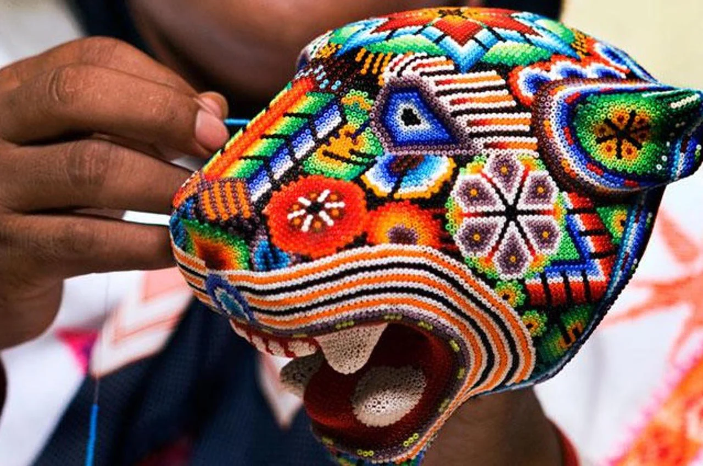
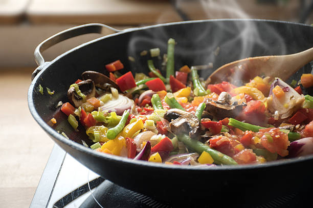

Arte y Manos
Artesanías únicas hechas a mano con materiales locales. Descubre piezas de cerámica, textiles y joyería que reflejan la rica cultura de nuestra región.
Ver detalleMercado Local es una plataforma diseñada para conectar a los consumidores con los pequeños emprendedores de su comunidad. Nuestro objetivo es facilitar el descubrimiento y el apoyo a los negocios locales, impulsando así la economía local y fomentando un comercio más justo y cercano. Creemos en el poder de la comunidad y en la importancia de valorar los productos y servicios únicos que cada emprendedor tiene para ofrecer.

Artesanías únicas hechas a mano con materiales locales. Descubre piezas de cerámica, textiles y joyería que reflejan la rica cultura de nuestra región.
Ver detalle
Disfruta del auténtico sabor de la comida casera. Ofrecemos platos tradicionales preparados con recetas familiares y los ingredientes más frescos.
Ver detalleProductos de belleza y cuidado personal elaborados con ingredientes naturales y orgánicos. Libres de químicos y respetuosos con el medio ambiente.
Ver detalle